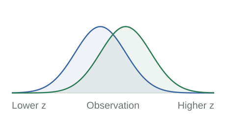

Jan Vecer · Prices as Information
Jan Vecer / Research & ideas
Prices as information.
An information-theoretic perspective on finance.
Beliefs specify a desired distribution. Trading determines which distributions can be implemented. Explore how this connection explains prices, portfolio choice, hedging, and learning.
One price. Two probability measures.
\[ \frac{X(T)}{X(0)} =\frac{d\mathbb P^X}{d\mathbb P^Y}. \]

Market measure \(\mathbb P^Y\) Asset measure \(\mathbb P^X\)
The ratio is evaluated at the observed state at time \(T\). Here \(X(t)\) is measured in units of \(Y\), so \(Y(t)=Y(0)=1\).
01 / Prices
A payoff is a probability model.
Weight market state prices by a normalized nonnegative payoff. The resulting distribution describes the states that the position emphasizes.
02 / Choice
Trading implements a belief.
With all outcome claims available, beliefs determine the log-optimal payoff. A restricted menu leaves a measurable information gap.
03 / Information
Log performance is information.
Under an asset’s own measure, its expected log performance is the relative entropy between that measure and the market measure.
A bridge to information theory
What does a likelihood ratio tell us?
A ratio above one favors one probability model over another. Its logarithm measures the strength of that evidence. Average this log ratio under the first model, and you have relative entropy.
Because a normalized price is a likelihood ratio, the same number measures expected log performance. Here the expectation is under the asset measure \(\mathbb P^X\).
\[ \begin{aligned} &\mathbb E^X\!\left[\log\frac{X(T)}{X(0)}\right]\\[.35em] &\quad=\mathbb E^X\!\left[\log\frac{d\mathbb P^X}{d\mathbb P^Y}\right]\\[.35em] &\quad=D_{\mathrm{KL}}(\mathbb P^X\Vert\mathbb P^Y). \end{aligned} \]
One running example. Beliefs \((2/3,1/3)\) versus pricing probabilities \((1/2,1/2)\) give the ideal payoff \((4/3,2/3)\). Its expected log growth under those beliefs is \(0.056633\) nats per trial.
The interactive guide
One framework. Different points of entry.
Start with one bet, see how trading restrictions change portfolio choice, then follow the accumulation of information through time.
01
The framework
State prices, likelihood ratios, log growth, and the distinction between a belief and an asset-implied measure.
02
Portfolio choice
Match beliefs to attainable payoffs. Compare exact log growth, utility, and quadratic approximations on the same market.
03
Linear information flows
Six model families connect accumulating evidence to price paths: binomial, negative binomial, normal, Poisson, gamma, and inverse Gaussian.
04
Dynamics and learning
Follow evidence through time: price processes, Bayesian wealth updates, and the distinction between learning and committing capital.
The books
Two perspectives on the same market.
Forthcoming / Chapman & Hall–CRC
Principles of Portfolio Choice
An Information-Theoretic, Likelihood-Based Perspective
A systematic development of the payoff–measure correspondence, linking portfolio selection to statistics and information theory.
2011 / CRC Press
Stochastic Finance
A Numeraire Approach
Derivative pricing and hedging viewed through relative prices, changes of numeraire, and the symmetry between assets.
Selected research
From the framework to the literature.
Published and forthcoming articles connected to the ideas on this site.
Relative-entropy tests of market efficiency: symbolic benchmarks, finite alphabets, and attainable log-growth
Jan Vecer
Conditional information, statistical efficiency tests, and the distinction between ideal information and attainable trading growth.
Author manuscript (PDF) · DOI: 10.1080/14697688.2026.2749693
Likelihood-Ratio Pricing, Capital Lock-In, and Prefunded Restarts in Parimutuel Prediction Markets
Jan Vecer
Portfolio optimization beyond utility maximization: the case of driftless markets
Jan Vecer, Mark Richard, and Stephen Taylor
On the utility maximization of the discrepancy between a perceived and market implied risk neutral distribution
Robert Navratil, Stephen Taylor, and Jan Vecer
Talks and resources
From one bet to market information.
The Columbia lectures develop discrete and continuous models. The Cornell seminar studies capital lock-in and recovery in costly markets. The Bloomberg presentation gives a short route from information channels to option portfolios, and the Oxford lecture connects portfolios to Bayesian learning.
Start small. Keep the structure.